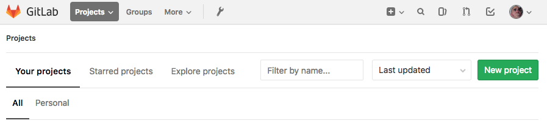

Gitlab setup¶
We set our sever up 3 years ago and did not document the steps :( BUT there is a article posted on Techrepublic.com that has all the steps covered. Jack even included instructions for adding SSH keys so your client can talk to the GitLab server.
Gitlab prep for CI¶
At this point you should have a functioning internal GitLab server. Next step is to create a project.

- Login to your Gitlab server.
- Click the green button to create a new Project.
- Name your project
- add a project description
- Select a visability level. I picked Internal so anyone can contribute from our team.
- Click create project

Creating .gitlab-ci.yml file¶
Now we have a project started and we can add a configuation file. The .gitlab-ci.yml file needs to be in the root of the project.
Note
YAML files are sensitive to indentation and spacing. Do not use tab to create spaces.
Touchand create a file called .gitlab-ci.yml

As you can see at the top of the image shows the .yml file is configured correctly. Super, it’s setup correctly, but how do we format it?
Note
There is a list of reserved keywords that cannot be used to name a job.
imageservicesstagestypesbefore_scriptafter_scriptvaribalescache
A job is defined by a list of paramaters telling the job what to do. In our case, we want to automate our document building. Now all the pieces are coming together.
- We have a gitlab server to host our projects containing code and documentation.
- We configured docker
- We setup our runner
We need to tell the runner what to “automate”, then the runner configures the docker contaniner with our .gitlab-ci.yml setup file.
Every job needs to have a script, everything else is optional. In our case we use image to define what OS to load in our docker container.
We chose alpine 3.6 which is a 5MB linux image. You can find tons of other Official repositories on Dockers site.
Pages:can be any word you want to describe the job such as “poopmonster” or “job1”. The educated call it arbitrary. Thescript:builds a fresh new envirnoment everytime. Previously these steps were manual. The CI also takes the built files and reloads them so all changes are immediatly available.
only:is a list of git refs for which job is created.
artifacts:Artifacts are a listing of files and directories where the successful job gets placed.
For more information about GitLab’s CI/CD configuration Click here.